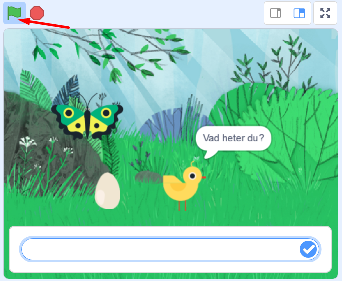
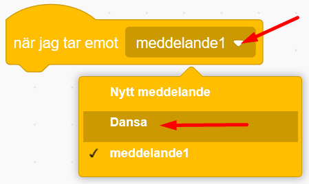
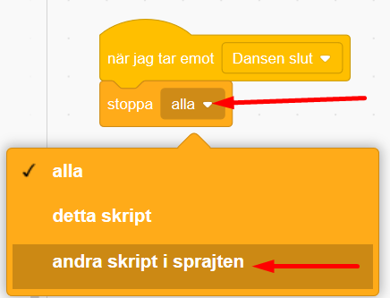
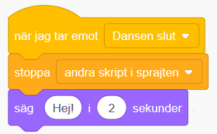
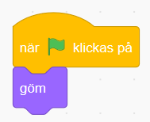
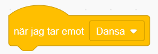
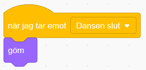
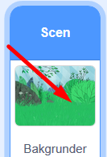

Koda ett digitalt vykort som du kan skicka till någon du vill hälsa till. Det är interaktivt så att mottagaren av kortet kan skriva in sitt namn och bli personligt firad med fest, musik och hälsningar! Kortets tema går att ändra om du vill göra födelsedagskort, julkort, påskkort, Alla hjärtansdagkort eller annat vykort. Ett mål med uppgiften är att du skall lära dig att använda meddelanden och funktioner. Klicka på bilden nedan för att se ett exempelprojekt på ett digitalt vykort på jultema:
Bläddra dig fram genom denna guide, steg för steg. Öppna även verktyget Scratch på sajten www.scratch.mit.edu där du kodar och skapar själva spelet utifrån Kodbokens instruktioner. Logga gärna in på Scratch för att kunna spara och dela projektet.
Denna instruktion har exempel med bilder från ett påskkort, men du väljer såklart vilket tema du själv vill. Då börjar vi koda!
Först behöver du en bakgrund och några fina sprajtar som figurer! Vi väljer sprajtar som kan röra på sig. Vi har i detta exempel valt att göra ett påskkort.
VAD SKA JAG GÖRA?
Se i videon ovan hur du ska:
INSTRUKTION HUR JAG GÖR STEG-FÖR-STEG:
Tryck på Skapa på Scratch startsida för ett skapa ett nytt projekt. Se gärna till att du är inloggad på Scratch, så kan du spara ditt projekt även.
Klipp först bort katt-sprajten genom att klicka på krysset på den lilla kattbilden under scenen. Då försvinner den.

Klicka på ikonen för Ny bakgrund som finns längst ned till höger och välj sen en bakgrund du gillar. I vårt exempelprojekt valde vi bakgrunden som heter "Forest". Du kan givetvis välja att rita en egen bakgrund med ritverktyget.

Klicka på Ny sprajt-ikonen som ser ut som en liten vit katt på en blå knapp. Välj en ny sprajt som huvudkaraktär i ditt vykort, se till att det är en sprajt som kan röra på sig (alltså en figur som rör sig när du för muspekaren över den). Vi har valt en kyckling, men du kan välja vilken sprajt du vill såklart.

Lägg in två sprajtar till som också kan röra på sig. Dra i figurerna på scenen så att de står där du vill ha dem, med utrymme för att röra på sig.
Om figurerna är för stora eller för små kan du ändra storlek på dem. Klicka på siffrorna vid Storlek som finns under scenen med dina sprajtar och skriv där in en ny siffra över eller under 100, där 100 är 100%, alltså full storlek. Prova dig fram vad som blir lagom.

Nu har du sprajtar och en bakgrund. Dax att börja koda vykortet!
Vi börjar med första steget! Du ska få en av dina sprajtar att fråga vad kortets mottagare heter.
VAD SKA JAG GÖRA?
Se i videon ovan hur du ska:
INSTRUKTION HUR JAG GÖR STEG-FÖR-STEG:
Välj den sprajt du vill koda att ställa en fråga genom att klicka på den lilla figuren av din sprajt under scenen så den blir markerad. Vi har valt att kycklingen ska ställa frågan i vårt exempel.

Från tema HÄNDELSER drar du in blocket när GRÖNA FLAGGAN klickas på och lägger det fritt på skriptytan för din sprajt.

Från tema KÄNNA AV drar du in blocket Fråga "Vad heter du?" och vänta och sätter fast det under det gula blocket med gröna flaggan.

Klicka på den gröna flaggan ovanför scenen med ditt projekt och se din sprajt ställa frågan.

När du har skrivit in ett namn i svarsrutan längst ned klickar du på den lilla blå ikonen till höger eller tryck på Enter-knappen på datorns tangentbord. Just nu kommer inget att hända, men du kommer att förstå senare vad namnet ska användas till!
Testa ditt projekt! Klicka på START-flaggan ovanför ditt projekt på scenen. Frågar sprajten "Vad heter du?"? Kan du skriva ett svar på frågan i rutan?
Dax att koda vidare!
Nu vill du ge sprajten några rörelser till musik.
VAD SKA JAG GÖRA?
Se i videon ovan hur du ska:
INSTRUKTION HUR JAG GÖR STEG-FÖR-STEG:
Först lägger vi till musik. Gå till fliken LJUD i övre vänstra hörnet av Scratch.

Klicka sen på VÄLJ NYTT LJUD-ikonen i nedre vänstra hörnet.

Välj nytt ljud från ljudbiblioteket. Lyssna på de olika ljuden genom att föra muspekare över den lila Play-symbolen på ljuden och klicka sedan på mittan på det du vill välja in i projektet!

Tips! Kategorin Loopar är bra om man letar efter en längre musikslinga istället för enskilda ljud. Klicka på knappen Loopar högst upp för att få fram endast musikslingor.
Klicka på fliken KOD i vänstra övre hörnet så kommer du tillbaka till kodsidan igen. Se till att din sprajt som ställer frågan är vald.

Nu ska vi lägga till kod för ett meddelande. Från tema HÄNDELSER drar du in blocket skicka meddelande1. Sätt in det under de andra blocken på skriptytan.


Nu lägger vi in musiken. Från tema Ljud drar du in blocket Spela ljudet ____ tills färdigt. (i blocket står namnet på det ljud du valde tidigare, i vårt exempel heter ljudet Dance Around.

Nu ska vi skapa ett nytt skript till vår sprajt som som vi lägger bredvid det första på skriptytan. Från tema HÄNDELSER drar du in blocket När jag tar emot meddelande1. Klicka på den lilla pilen och välj meddelandet Dansa som du skapade tidigare.

Nu ska vi lägga till en loop som gör att kod kan loopas för evigt om och om igen. Från tema KONTROLL drar du in blocket för alltid. Sätt fast det under det förra blocket med meddelandet du just drog in.

Nu ska vi få sprajten att byta klädslar, eller bilder av olika positioner av sprajten som det är egentligen. Från tema UTSEENDE drar du in blocket nästa klädsel och lägger det inuti loopen, så det ser ut såhär:

Från tema KONTROLL drar du in blocket vänta 1 sekunder. Lägg in det i loopen under blocket nästa klädsel. Klicka på variabeln 1 i blocket och ändra till 0.25 för kortare väntetid.

Nu finns det kod för att din sprajt ska kunna röra på sig och dansa runt till musik!
Testa ditt projekt! Spelas ljudet efter att du har skrivit in ett namn som svar? Dansar sprajten lagom fort eller går det för snabbt eller långsamt? Testa att byta ut hur länge den ska vänta mellan klädselbyten.
För att sprajten ska sluta dansa när melodin är slut, måste du koda den att göra det. Det kan du fixa med ett nytt meddelande som berättar att dansen är slut, så att sprajten kan säga en hälsning, exempelvis "Glad Påsk" och sluta dansa.
VAD SKA JAG GÖRA?
Se i videon ovan hur du ska:
INSTRUKTION HUR JAG GÖR STEG-FÖR-STEG:
Först ska vi lägga in kod för ett meddelande. Från tema HÄNDELSER drar du in blocket skicka meddelande1. Fäst blocket i det första större skriptet i sprajten, såhär:

Sen skapar vi ett nytt meddelande. Klicka på lilla pilen i meddelande-blocket och klicka på Nytt meddelande. Döp det till Dansen slut.
Nu ska vi skapa ett helt nytt skript bredvid de andra. Från tema HÄNDELSER drar du ut När jag tar emot meddelande1 och lägger det fritt på skriptytan som ett nytt skript. Klicka på lilla pilen i blocket och byt till meddelandet Dansen slut.

Från tema KONTROLL tar du blocket stoppa alla. Lägg det direkt under det förra blocket du lade in. Klicka på lilla pilen i blocket och byt till andra skript i sprajten.

Nu ska vi koda så att sprajten säger något på slutet och lägger in namnet du skrev in i början. Från tema UTSEENDE drar du in blocket säg Hej! i 2 sekunder. Fäst det under det förra blocket du lade in, såhär:

Nu ska vi lägga in en operator. Det är ett block som kan göra beräkningar i koden, exempelvis sätta ihop olika saker. Från tema OPERATORER drar du ut det gröna blocket som heter sammanfoga äpple och banan. Lägg det inuti textbubblan i förra blocket där det står Hej!.

Tips Svårt att lägga in operatorblocket? Gör såhär: dra operatorblockets ena kant snett in över texten Hej! och när det visas en vit ring runt texten Hej! så kan du släppa. Då fäster operatorblocket inne i textcirkeln.
Klicka på texten äpple i det gröna blocket och skriv istället Glad Påsk. (lägg till ett mellanslag efter Glad påsk, så blir det mellanrum mellan Glad Påsk och nästa ord som sen ska komma.)

Nu ska vi lägga in svaret på projektets första fråga Vad heter du?, som sprajten ställde i början. Från tema KÄNNA AV drar du in lilla blocket Svar och lägger det inuti den gröna operator-blockets andra textcirkel, där det nu står banan. Såhär:

När du är färdig ska koden se ut såhär:

Testa ditt projekt! Slutar sprajten att röra sig när melodin är slut? Säger pingvinen "Glad Påsk" och det namn som du skrev in när kortet frågade "Vad heter du?" i början?
Nu vill vi att alla sprajtar ska röra på sig och dansa loss! Vi kodar vidare!
Nu vill vi att de två andra sprajtarna ska dansa också! Du kommer att få se varför skicka och ta emot meddelande är så bra att ha. Det kallas för en FUNKTION och är en del av programmet som kan anropas flera gånger och från flera olika skript. Då börjar vi koda!
VAD SKA JAG GÖRA?
Se i videon ovan hur du ska:
INSTRUKTION HUR JAG GÖR STEG-FÖR-STEG:
Nu ska du skapa två skript vardera på de andra sprajtarna i projektet. Klicka på de små bilderna av sprajtarna under scenen med ditt projekt för att byta till ny figur att koda. Skapa skripten du ser i bilden nedan på vardera sprajt.

Du bestämmer själv vad som ska hända när sprajtarna tar emot meddelandet Dansa och meddelandet Dansen slut. Sprajtarna kan röra sig genom att byta klädslar, kanske glida till ny position eller säga något med pratbubbla de med? Testa dig fram. Såhär kan till exempel ett skript se ut om du vill att något ska glida till olika slumpvisa ställen.

Testa ditt projekt! Dansar alla sprajtar nu? Dansar de i rätt hastighet? Testa att ändra antalet sekunder som de väntar innan byte av klädsel.
Du har dansande sprajtar och musik, men det finns alltid plats för lite mer bling och pynt på vykortet! Kanske ska en annan sprajt dyka upp när musiken tar slut, en snöflinga, en stjärna eller annan figur?
VAD SKA JAG GÖRA?
Se i videon ovan hur du ska:
INSTRUKTION HUR JAG GÖR STEG-FÖR-STEG:
Börja med en sprajt som ska vara osynlig i början men dyka upp på slutet, exempelvis ett hjärta. Lägg då till sprajten Heart från biblioteket och placera den där du vill ha den på scenen.
Nu ska vi koda när den nya sprajten ska vara gömd och när den ska synas. Från tema HÄNDELSER drar du ut blocket när GRÖNA FLAGGAN klickas på och lägger den på den nya sprajtens skriptyta.
Från tema UTSEENDE drar du ut blocket göm och sätter fast den under blocket med gröna flaggan.

Från tema HÄNDELSER drar du in blocket när jag tar emot Dansa (alltså ett meddelande). Lägg det fritt på sprajtens skriptyta bredvid det första skriptet.

Från tema UTSEENDE drar du in lilla blocket visa och fäster det under förra blocket.

Från tema KONTROLL drar du ut blocket för alltid, som alltså är en loop. Fäst det under det förra blocket du drog in.

Från tema UTSEENDE drar du in blocket nästa klädsel och lägger det inuti loopen.

Från tema KONTROLL drar du in blocket vänta 1 sekunder. Lägg det längst ned innanför loopen. Klicka på variabeln 1 och ändra till 0.25.

Om du vill att sprajten ska försvinna igen när musiken tar slut drar du från tema HÄNDELSER in blocket när jag tar emot Dansa. Lägg det fritt på skriptytan bredvid de andra skripten. Klicka på lilla pilen i blocket och byt medelandet till Dansen slut.

Från tema UTSEENDE drar du sen in blocket göm och fäst det direkt under blocket du just drog in. Då ser skriptet ut såhär.

Testa koden! Fungerar projektet som du vill? Gömmer sig och visar sig sprajten som den ska? Tips: om något inte fungerar, gå igenom koden och läs den högt så kan man enklare hitta felet. Kontrollera att du valt rätt meddelande i de olika skripten.
Nu ska vi se till att själva bakgrunden får en snygg färgeffekt!
VAD SKA JAG GÖRA?
Se i videon ovan hur du ska:
INSTRUKTION HUR JAG GÖR STEG-FÖR-STEG:
Klicka på lilla bilden av din bakgrund nere till höger under ditt projekt där det står Scen. Då kommer skriptytan för din bakgrund fram, där du kan lägga in kod.

Från tema HÄNDELSER drar du in två meddelandeblock med när jag tar emot Dansa Lägg dem bredvid varandra på bakgrundens tomma skriptyta. Ändra så att ett block har meddelandet Dansa och det andra har meddelandet Dansen slut, så det ser ut såhär:

Från tema KONTROLL drar du in blocket för alltid, alltså en loop, och fäster det under blocket när jag tar emot Dansa.
Från tema UTSEENDE drar du in blocket ändra färgeffekten med 25 och lägger den inuti loopen.
Från tema KONTROLL drar du in blocket vänta 1 sekunder. Lägg det nederst inuti loopen. Klicka på variablen 1 i blocket och skriv 2 istället.
När du är färdig ska skriptet se ut såhär:

Från tema KONTROLL drar du in skriptet stoppa alla. Fäst det under blocket när jag tar emot Dansen slut. Klicka på lilla pilen i blocket och ändra till stoppa andra skript i sprajten.

Testa ditt projekt! Ändrar bakgrundsbilden på scenen färg? Slutar den ändra färg när musiken är slut?
Grattis, nu har du gjort klart uppgiften.
Glöm inte att spara ditt projekt! Döp ditt vykortsprojekt högst upp. Klicka gärna på Dela så kan andra även se ditt vykort och projekt.

Testa ditt projekt och låt gärna andra få prova!
Har du tid över? Här kommer utmaningar för dig som vill fortsätta.
Kan du ändra i skripten för dina sprajtar så att de blir mer olika och roliga?

Testa till exempel att:
Lägg till pratbubblor på sprajtarna så de säger olika saker
Ändra färgeffekt under dansen (på samma sätt som du gjorde med bakgrunden)
Ändra storlek på sprajten så den blir exempelvis större eller mindre medan musiken spelas
Lägg till rotation så att sprajtarna vrider på sig
Ändra hur fort dom dansar
låt sprajter glida till slumpvisa positioner
Rita till objekt eller ändra färger på olika klädslar i dina sprajter
Kan du hitta fler sätt att göra dom mer unika?
Vad är en loop bra till när man programmerar?
Vad för block kan du använda för att få spelaren att ge ett svar på en fråga?
Vad är ett meddelande?
Vad kan du använda ett meddelande till?